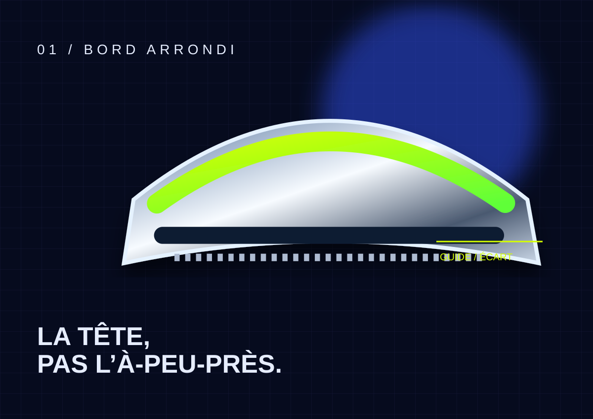

A/03 — TÊTE
Des bords ronds. Vous n’êtes pas une planche à découper.
Dans cette démonstration, la tête évite les arêtes vives du côté peau. C’est une géométrie représentée, pas une certification ni une promesse de résultat.
Lire les limites